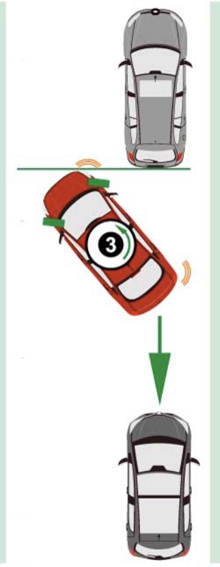

- Use your right-hand turn signal
- Pull up next to the vehicle that will be parked in front of you allowing 3 feet of space between you
- Align your rear tires with the parked car's bumper
- Shift your vehicle into reverse and check for oncoming traffic
- Without letting your foot off the break, turn the wheel two full turns to the right
- Slowly ease your foot off of the break, use light gas if necessary, until the front end of the vehicle is facing away from the parked car at a 45 degree angle
-Stop the vehicle
- With your vehicle at a stop, straighten out your wheel - Slowly ease off the break again and reverse straight back until the front end of your vehicle has cleared the parked vehicle - Stop the vehicle
- Turn your wheel two turns to the left
- Slowly ease your foot off the brake to complete reversing into the parking space
- Center your vehicle between the cars in front and behind you
Congratulations! You now know how to effectively parallel park. With a little practice, you will have it down in no time!